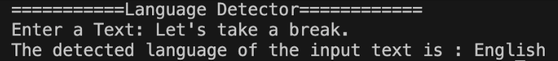

Overview
This project works with a multilingual dataset containing labeled sentences from various languages. After preprocessing the data, a Multinomial Naive Bayes model is trained on these labeled sentences.
The trained model accurately identifies the language of any arbitrary sentence, making it a useful tool for automatic language detection in diverse text inputs.
Skills Leveraged
- Python
- Scikit-learn
- Natural Language Processing
- NumPy, Pandas
- Git/GitHub
Demonstration

